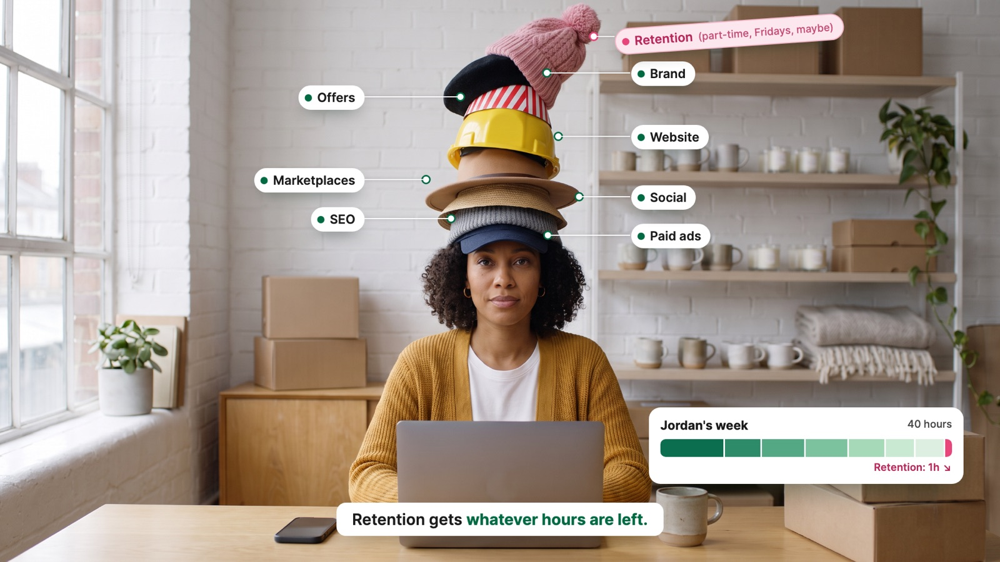
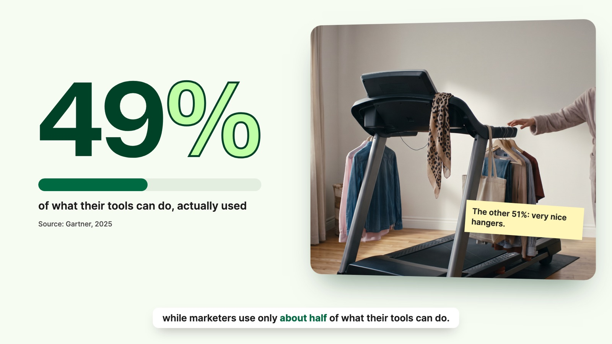
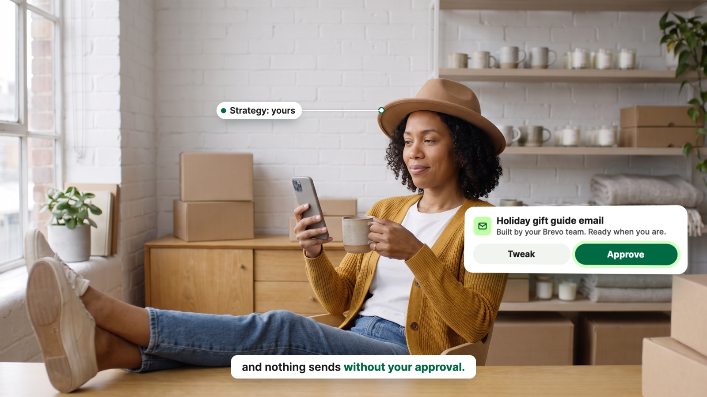
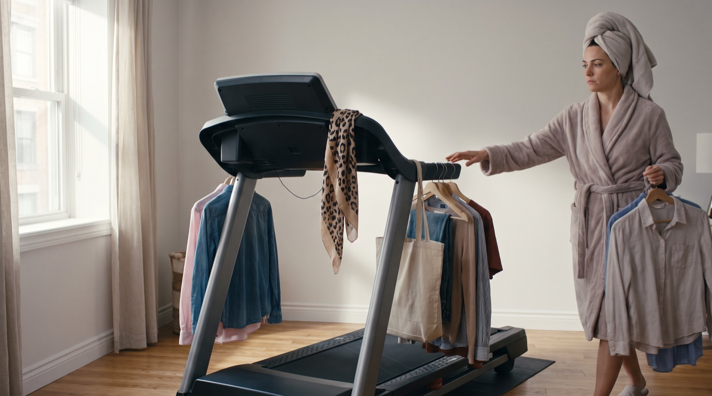

Will's outbound film, rebuilt in three ways: a voice-first mix, motion graphics pushed several notches with a dry, tongue-in-cheek streak, and six AI live-action shots woven in as full-bleed plates and split screens. The voice track, script and 77.5 s length stay exactly as in v1.
Same voice take and timing
AI shots, about 35 s on screen (45%)
Music under the voice while it talks (v1: -1.7 dB)
Generation cost, Seedance 2.5 at 1080p
I measured v1: while the narrator talks, the music sits only 1.7 dB below the voice, and 12 moments have an effect within 6 dB of it. That is why it felt like it was fighting him. The fix:
v1 was clean cards on a mint stage. v2 keeps the Brevo palette, type and real UI, but every scene gets a signature move, and the film carries a running deadpan joke: Jordan, head of ecommerce at Fernhill Home, literally wearing eight hats.
Transitions are camera moves with meaning: a zoom through the "o" of "who" into live action, an iris that shrinks Jordan's footage into the avatar, a pink hat thrown out of a graphic and caught in real footage.
AI shots are filmed locked off, so tags, leader lines and cards stay pinned to real objects (each hat, the folders, the phone) while the camera moves happen in the edit.
3D card flips with a light sweep, UI panels fanning out in space, a bar that shoots out of the top of frame with the camera tilting up after it, paper that drops with weight and shadow.
"Stop buying a CRM." lands word by word on the beat, CRM gets a hand-drawn strike, and the pink Retention hat drops onto the word "retention" like it is wearing it.
Small deadpan asides, one at a time and never over a face: "Retention (part-time, Fridays, maybe)", a Blame-o-meter, "Tutorial 14 of 30", "The other 51%: very nice hangers", "(Yes, nineteen.)".
Natural daylight grade, no green glare or tint on any footage. Brand green lives only in graphics. No logos or readable text in the AI shots. All Brevo screens are HTML rebuilds of the real UI, never AI.
Real keyframes with the v2 graphics laid over them (stills; in the film everything moves).

Scene 2, "Retention gets whatever hours are left." Each hat is tagged as the narrator names it; the pink one gets the joke.

Scene 7, "about half of what their tools can do": split screen.

Scene 10, "nothing sends without your approval": one hat left, Jordan taps Approve in the footage, the card answers.
Ideas I considered and dropped: an empty software box unboxing, a wall clock being wound back, a caravan at sunset behind the 19x (it would read as Everything Caravans' own footage). The six below scored highest on fit with the line, comedy, readability and how reliably the model can do them. These are the actual first frames; each shot animates from its still.
Full-bleed plate for scene 2. Jordan stares at camera; the phone buzzes, eyes flick to it, then the laptop; the tower sways and the pink hat slides; Jordan steadies it without looking, then a tired polite smile right on "whatever hours are left".
Scene 5 plate. The agency man slides two folders over on "two contracts". On "blames", he points at the vendor on the screen while she points straight back out of the TV at him. Jordan's eyes go left, right, left, like a tennis match.
Split screen for scene 6. The binder lands on "hire" with a thud and a puff of paper dust; he pushes his glasses up and opens page one. Beside him, a "Learning the tool" bar sticks at 50% with a spinner.

C45 s40.2 to 44.1Split screen for the Gartner beat. She hooks one more shirt on the handlebar, fixes the scarf, steps back and gives her "wardrobe" a satisfied nod. The 49% counts up beside it.
Scene 9. The pink Retention hat is thrown out of the graphic on "our own team"; a real hat flies into this shot and he catches it, pulls it on, nods to camera and turns to his desk. Real Brevo app panels fan out beside him on "flows", "campaigns", "deliverability".
Scene 10. One hat left, feet on the desk, coffee in a Fernhill mug. The phone buzzes, Jordan glances and taps once with a thumb on "approval"; the graphic card ticks to "Scheduled". Leans back, content.
Every Jordan shot is generated from this one reference, so it is the same person throughout. Jordan's avatar on the side card becomes a crop of this face instead of initials.
Times are film seconds. The voice is unchanged, so every beat below is placed on its word.
| Time | Voice | Picture | Signature move and wink | Sound |
|---|---|---|---|---|
| 0.0 to 4.2 | "Quick question: who runs retention at your brand?" | Graphics. The Fernhill store from film 1 floats in 3D; a spotlight sweeps across it looking for someone. The question builds word by word. | On "brand?" the camera dives through the "o" of "who" straight into live action. | Music starts. One soft tick on "Quick", one swell into the dive. |
| 4.2 to 15.35 | "At most online brands, it's one marketer wearing eight hats, from paid ads and SEO to social, marketplaces, the website, offers and the brand. Retention gets whatever hours are left." | C1 full bleed. Starts punched in on Jordan's face, pulls back to reveal the tower on "eight hats". | A leader line draws to each hat as it is named. Pink hat: "Retention (part-time, Fridays, maybe)". Jordan's week bar slides in: 40 hours, retention gets the last sliver. Ends with an iris closing on Jordan's face, which becomes the avatar on the side card. | One soft pop per hat tag (7, very quiet). Nothing on the iris. |
| 15.35 to 19.6 | "When results don't come, most brands try one of three fixes." | Graphics. A retention line chart sags; three fix cards deal out like playing cards in 3D. | The chart line droops and literally sighs (a little deflate). Cards fan with perspective. | One card-deal sound. |
| 19.6 to 24.5 | "A new tool is the same problem with a new logo, because software doesn't add hours." | Graphics. A tool card flips in 3D from "Mailstack" to "Retainly" with a light sweep across the glass. | Under it, Jordan's 40-hour week bar does not move. Aside: "New logo. Same 40 hours." | One flip sound on "logo". |
| 24.5 to 31.7 | "An agency on top means two contracts, two bills, and when results slip, everyone blames someone else." | C2 full bleed, slow push in done in the edit. | Folders get "Contract 1" and "Contract 2" tags; two bills drop onto the table with weight. On "blames", arrows ping-pong between the two pointers and a Blame-o-meter needle swings. "Owner: nobody" stamps on, held 1.2 s. | Paper drop. Music stops for one beat after "else", stamp lands in the silence. |
| 31.7 to 36.3 | "And an in-house hire spends half their time just learning the tool." | Split screen: C3 left, graphics right. | Diagonal wipe. "Learning the tool" bar fills to exactly half and sticks, spinner turning. "Tutorial 14 of 30" ticks up once. | The binder thud (from the edit, quiet). One tick. |
| 36.3 to 44.1 | "In every case, the software and the people running it are separate, while marketers use only about half of what their tools can do." | Graphics first, then split screen with C4 from "while marketers". | "Software" and "People" sit on two 3D islands that drift apart as a gap opens. Then 49% counts up next to the treadmill; sticky note: "The other 51%: very nice hangers." Source: Gartner, 2025. | One soft count tick. Island drift is silent. |
| 44.1 to 49.15 | "So stop buying a CRM, and start buying retention." | Graphics only, the calmest frame in the film. | Kinetic type on the beat. "CRM" gets a lime hand-drawn strike. "Start buying retention." lands, then the pink hat drops onto the word "retention" and wobbles. Held still for half a second. | Music drops out to its breakdown; one soft chime on "retention". |
| 49.15 to 56.1 | "Brevo built the platform, and our own team runs it for you: your flows, your campaigns, and your deliverability." | Graphics, then C5 from "our own team". | Jordan's card grows; the pink hat lifts off the tower and is thrown out of frame right. Match cut: it flies into C5 and he catches it. Real Brevo screens (automation flow, campaigns, sender and domain settings) fan out in 3D beside him, one per word. | Groove returns exactly on "Brevo". One catch sound. Soft UI clicks on the three panels. |
| 56.1 to 64.2 | "That's one team, one fee, and one owner of the result. You keep the strategy, and nothing sends without your approval." | Graphics, then C6 full bleed from "You keep the strategy". | "One team", "One fee", "One owner" orbit and merge into a single "Brevo Managed Services" card. Whip to C6: tag on the one remaining hat, "Strategy: yours". The thumb tap in the footage triggers Approve; card flips to "Scheduled, Friday 9:00", held 1.2 s. | One merge chime. One tap, one soft ping. |
| 64.2 to 69.0 | "For Everything Caravans, that returned nineteen times what they paid us." | Graphics. | Two 3D bars: Fees is tiny; Return shoots up out of the top of frame and the camera tilts up after it to find "19x". Aside: "(Yes, nineteen.)" | Count ticks on the rise. Music stops one beat after "nineteen". |
| 69.0 to 77.5 | "Reply to this email, and we'll show you three retention gaps on your store, for free." | Graphics. | A reply types "Yes, show me." and sends; three gap cards land; "Free" stamps in lime. Lockup: Brevo logo builds, headline, "Reply to this email: 3 retention gaps on your store, free." | Typing, send, one pluck on the logo on the track's real ending. |
Built for William Hearn's outbound sequence. Fictional brand (Fernhill Home), fictional people; the only real client named is Everything Caravans.